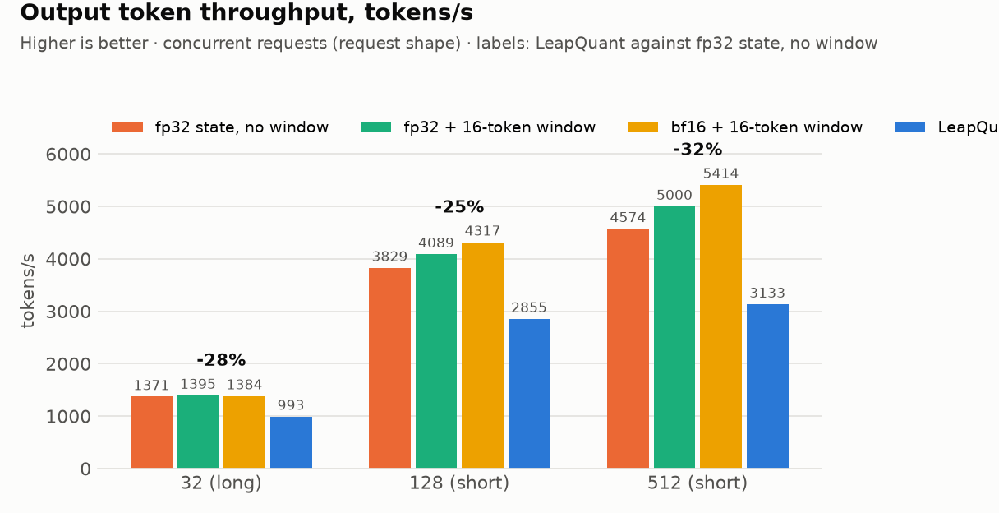
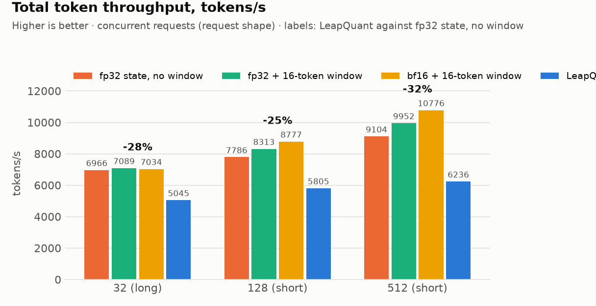
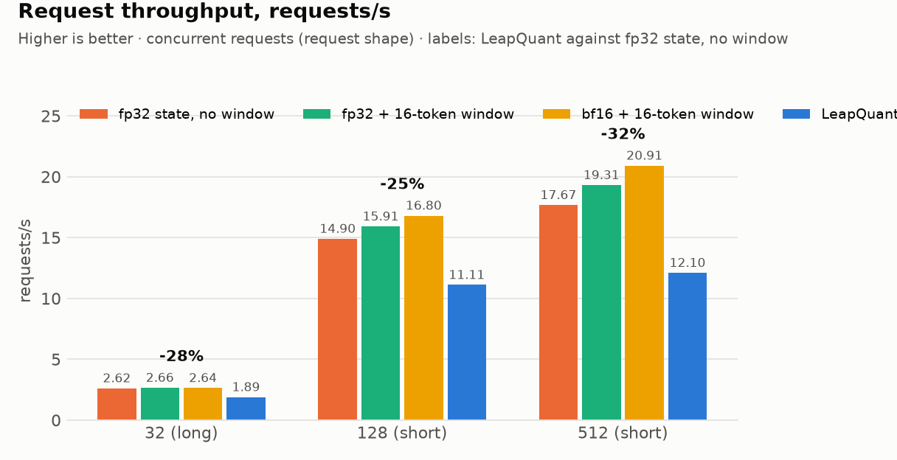
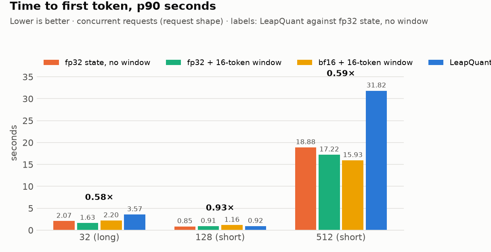
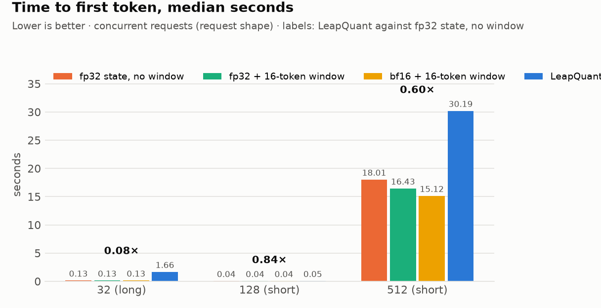
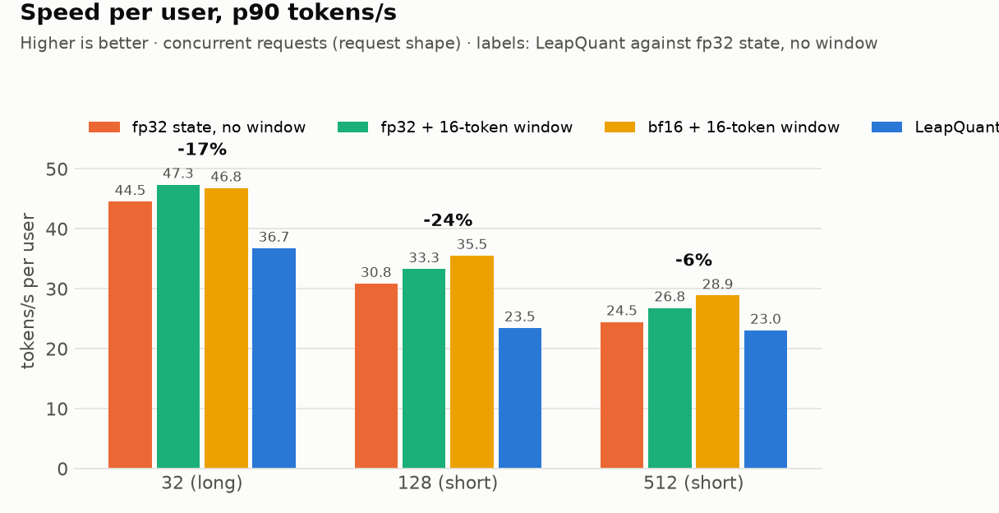
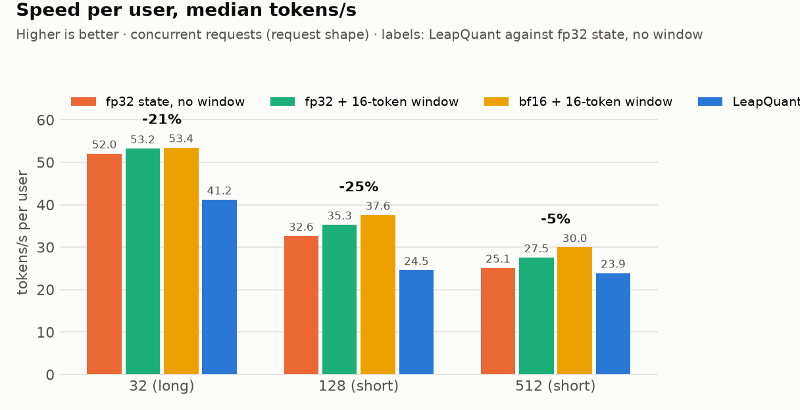
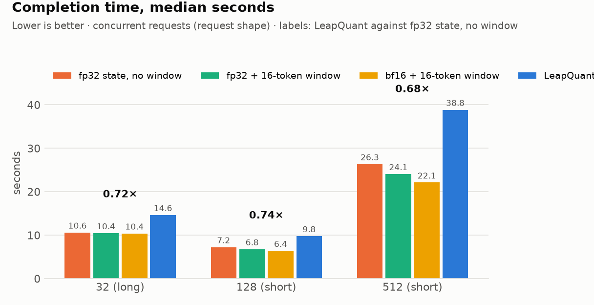

Serving: throughput, time to first token, speed per user
Qwen3.5-9B on one GPU, SGLang, at several numbers of concurrent requests. One chart and one table per metric, as in the benchmark reports this layout follows.
Output token throughput, tokens/s

| Concurrent requests | fp32 state, no window | fp32 + 16-token window | bf16 + 16-token window | LeapQuant | LeapQuant against fp32 state, no window |
|---|---|---|---|---|---|
| 32 (long) | 1371 | 1395 | 1384 | 993 | -28% |
| 128 (short) | 3829 | 4089 | 4317 | 2855 | -25% |
| 512 (short) | 4574 | 5000 | 5414 | 3133 | -32% |
Total token throughput, tokens/s

| Concurrent requests | fp32 state, no window | fp32 + 16-token window | bf16 + 16-token window | LeapQuant | LeapQuant against fp32 state, no window |
|---|---|---|---|---|---|
| 32 (long) | 6966 | 7089 | 7034 | 5045 | -28% |
| 128 (short) | 7786 | 8313 | 8777 | 5805 | -25% |
| 512 (short) | 9104 | 9952 | 10776 | 6236 | -32% |
Request throughput, requests/s

| Concurrent requests | fp32 state, no window | fp32 + 16-token window | bf16 + 16-token window | LeapQuant | LeapQuant against fp32 state, no window |
|---|---|---|---|---|---|
| 32 (long) | 2.62 | 2.66 | 2.64 | 1.89 | -28% |
| 128 (short) | 14.90 | 15.91 | 16.80 | 11.11 | -25% |
| 512 (short) | 17.67 | 19.31 | 20.91 | 12.10 | -32% |
Time to first token, p90 seconds

| Concurrent requests | fp32 state, no window | fp32 + 16-token window | bf16 + 16-token window | LeapQuant | LeapQuant against fp32 state, no window |
|---|---|---|---|---|---|
| 32 (long) | 2.07 | 1.63 | 2.20 | 3.57 | 0.58× |
| 128 (short) | 0.85 | 0.91 | 1.16 | 0.92 | 0.93× |
| 512 (short) | 18.88 | 17.22 | 15.93 | 31.82 | 0.59× |
Time to first token, median seconds

| Concurrent requests | fp32 state, no window | fp32 + 16-token window | bf16 + 16-token window | LeapQuant | LeapQuant against fp32 state, no window |
|---|---|---|---|---|---|
| 32 (long) | 0.13 | 0.13 | 0.13 | 1.66 | 0.08× |
| 128 (short) | 0.04 | 0.04 | 0.04 | 0.05 | 0.84× |
| 512 (short) | 18.01 | 16.43 | 15.12 | 30.19 | 0.60× |
Speed per user, p90 tokens/s

| Concurrent requests | fp32 state, no window | fp32 + 16-token window | bf16 + 16-token window | LeapQuant | LeapQuant against fp32 state, no window |
|---|---|---|---|---|---|
| 32 (long) | 44.5 | 47.3 | 46.8 | 36.7 | -17% |
| 128 (short) | 30.8 | 33.3 | 35.5 | 23.5 | -24% |
| 512 (short) | 24.5 | 26.8 | 28.9 | 23.0 | -6% |
Speed per user, median tokens/s

| Concurrent requests | fp32 state, no window | fp32 + 16-token window | bf16 + 16-token window | LeapQuant | LeapQuant against fp32 state, no window |
|---|---|---|---|---|---|
| 32 (long) | 52.0 | 53.2 | 53.4 | 41.2 | -21% |
| 128 (short) | 32.6 | 35.3 | 37.6 | 24.5 | -25% |
| 512 (short) | 25.1 | 27.5 | 30.0 | 23.9 | -5% |
Completion time, median seconds

| Concurrent requests | fp32 state, no window | fp32 + 16-token window | bf16 + 16-token window | LeapQuant | LeapQuant against fp32 state, no window |
|---|---|---|---|---|---|
| 32 (long) | 10.6 | 10.4 | 10.4 | 14.6 | 0.72× |
| 128 (short) | 7.2 | 6.8 | 6.4 | 9.8 | 0.74× |
| 512 (short) | 26.3 | 24.1 | 22.1 | 38.8 | 0.68× |
Full measurements
| Configuration | Shape | Concurrency | Output token throughput (tok/s) | Total token throughput (tok/s) | Request throughput (req/s) | Median TTFT (ms) | P90 TTFT (ms) | P99 TTFT (ms) | Median TPOT (ms) | P90 TPOT (ms) | Median ITL (ms) | P90 ITL (ms) | Median E2E Latency (ms) | Successful requests | Benchmark duration (s) |
|---|---|---|---|---|---|---|---|---|---|---|---|---|---|---|---|
| SGLang defaults (server capped at 83 running requests) | long | 32 | 1474.04 | 7491.86 | 2.81 | 152.78 | 1652.16 | 2416.28 | 17.98 | 21.87 | 13.36 | 14.64 | 9909.32 | 128.00 | 45.50 |
| fp32 state, no window | long | 32 | 1370.60 | 6966.11 | 2.62 | 126.46 | 2068.03 | 2830.64 | 19.22 | 22.46 | 14.45 | 15.33 | 10591.66 | 128.00 | 48.94 |
| fp32 + 16-token window | long | 32 | 1394.72 | 7088.70 | 2.66 | 126.09 | 1627.42 | 2398.61 | 18.80 | 21.12 | 14.27 | 14.80 | 10433.52 | 128.00 | 48.09 |
| bf16 + 16-token window | long | 32 | 1384.00 | 7034.22 | 2.64 | 129.13 | 2195.55 | 3006.83 | 18.71 | 21.37 | 13.97 | 14.83 | 10372.83 | 128.00 | 48.47 |
| LeapQuant | long | 32 | 992.60 | 5044.94 | 1.89 | 1657.83 | 3568.91 | 5395.45 | 24.29 | 27.22 | 21.17 | 22.14 | 14636.81 | 128.00 | 67.58 |
| SGLang defaults (server capped at 83 running requests) | short | 128 | 3211.58 | 6529.42 | 12.50 | 3125.70 | 5354.62 | 6477.11 | 22.42 | 30.80 | 16.46 | 36.45 | 8853.69 | 512.00 | 40.97 |
| fp32 state, no window | short | 128 | 3829.49 | 7785.71 | 14.90 | 43.98 | 853.55 | 1397.34 | 30.65 | 32.43 | 21.07 | 53.57 | 7232.47 | 512.00 | 34.36 |
| fp32 + 16-token window | short | 128 | 4088.90 | 8313.09 | 15.91 | 43.20 | 910.28 | 1412.66 | 28.36 | 30.05 | 18.71 | 51.96 | 6752.55 | 512.00 | 32.18 |
| bf16 + 16-token window | short | 128 | 4317.25 | 8777.36 | 16.80 | 41.73 | 1158.10 | 1451.65 | 26.63 | 28.16 | 17.09 | 50.42 | 6376.61 | 512.00 | 30.48 |
| LeapQuant | short | 128 | 2855.12 | 5804.73 | 11.11 | 52.61 | 916.27 | 1409.44 | 40.74 | 42.64 | 30.61 | 71.90 | 9768.67 | 512.00 | 46.09 |
| SGLang defaults (server capped at 83 running requests) | short | 512 | 3618.25 | 7201.82 | 13.97 | 30136.84 | 30871.31 | 31882.81 | 22.52 | 23.30 | 17.15 | 36.53 | 34480.55 | 2048.00 | 146.55 |
| fp32 state, no window | short | 512 | 4574.09 | 9104.35 | 17.67 | 18008.53 | 18877.31 | 20844.76 | 39.85 | 40.89 | 29.42 | 56.37 | 26338.07 | 2048.00 | 115.92 |
| fp32 + 16-token window | short | 512 | 5000.02 | 9952.12 | 19.31 | 16432.03 | 17220.38 | 19045.14 | 36.34 | 37.33 | 26.12 | 53.04 | 24063.43 | 2048.00 | 106.05 |
| bf16 + 16-token window | short | 512 | 5413.77 | 10775.66 | 20.91 | 15119.27 | 15927.93 | 17874.38 | 33.38 | 34.65 | 23.02 | 50.65 | 22107.27 | 2048.00 | 97.94 |
| LeapQuant | short | 512 | 3133.22 | 6236.42 | 12.10 | 30188.70 | 31819.81 | 34321.75 | 41.88 | 43.39 | 33.71 | 64.20 | 38844.19 | 2048.00 | 169.23 |
Metrics
- Output token throughput, tokens/s: generated tokens per second, all requests together.
- Total token throughput, tokens/s: input plus generated tokens per second.
- Request throughput, requests/s: completed requests per second.
- Time to first token, median and p90, seconds: the delay before generation starts.
- Speed per user, median and p90, tokens/s: 1000 ÷ time per output token of a request. The p90 figure is the speed that 90% of requests reach or beat.
- Completion time, median, seconds: the whole request.
Setup
Long shape: 4,096 input and 1,024 output tokens. Short shape: 512 and 512. Random prompts, sglang.benchmark.serving.
What it does not show
Answer quality, and any GPU other than the one of this run. Source: serving_*.log.
Generated 2026-11-13 10:28 from results/run-quick-einstein by reports/generate_reports.py. All reports.